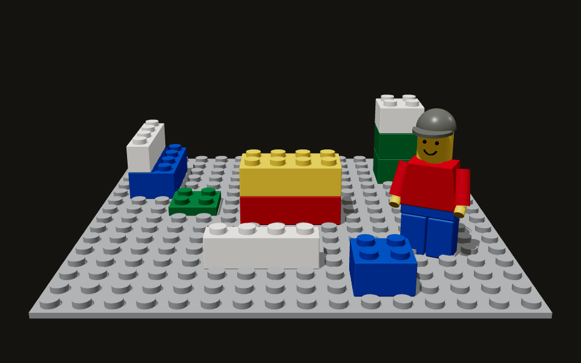
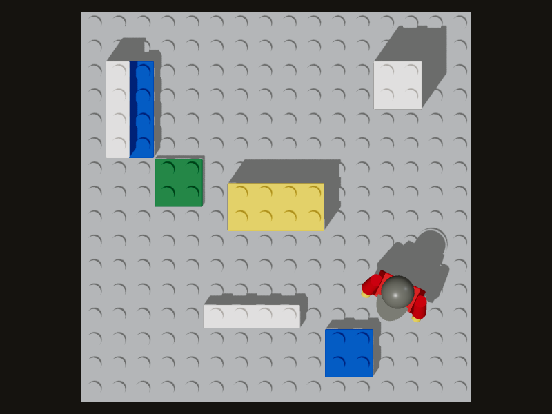
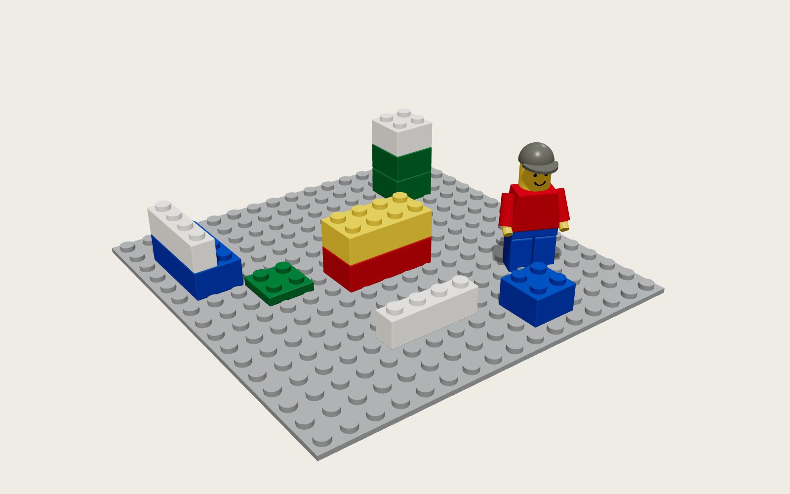

Two screens and two cameras watch one hand build in LEGO
A laptop shows a LEGO set in perspective. A tablet lies flat in front of it and shows the same set from above, as the bed you build on. The laptop's webcam sees your hand from the front. The tablet's front camera sees it from below. You build by hand: point at a brick, pinch to lift it, carry it, and open your hand to snap it onto the studs.
This page draws the screens for each step, in two versions that differ in what each camera is trusted to measure. The images inside the screens are three.js renders. The hand skeletons, outlines, drop lines and buttons are drawn on top as SVG.
Setup
Rendered with three.js. The laptop screen and the tablet show the Lift state. Lime frustum: camera A. Orange frustum: camera B. The hand is drawn as its 21 landmarks.
Screen A is the laptop. Its webcam, camera A, faces you. The laptop shows the set in perspective, as if a camera were looking at it from your side of the table.
Screen B is a phone or tablet lying flat between you and the laptop. Its front camera, camera B, faces up at the underside of your hand. The tablet shows the set in plan, top-down. Far on the tablet is toward the laptop.
Both cameras run the same 21-point hand landmark model. Each camera has its own gestures, so one hand shape can mean one thing to A and another to B.
Butter and Hand show up on status chips and in the first-build steps. Butter's face shows the tracking state: smiling when tracking, flat when paused, round mouth when something needs attention.
TrackingPausedReduced
Gesture spaces: one hand shape, two meanings
A reads gestures made toward the laptop. B reads gestures made over the tablet, seen from below. When both cameras see a gesture at once, the camera named in the table acts and the other ignores it.
Hand shape
Camera A · faces you
Camera B · faces up
Open, flat palm
Plan position: where the hand sits over the view (version 1). Left/right and height (version 2).
Plan cursor: the hand seen from below gives a ring on the bed. The span gives height in version 1.
Pinch (thumb tip to index tip)
Holds what is already lifted. Used at the corners in calibration.
Lift: a pinch seen from below picks up the brick under the ring.
Two fingers
Two fingers up, facing the laptop: rotate the held brick 90 degrees.
V seen from below, under the hand: duplicate the brick.
Hand leaves the view
Version 1: the hold pauses. Version 2: reduced reading from B.
Version 1: the hold pauses. Version 2: reduced reading from A.
The four gestures as drawn on the screens
Flat palm seen from the top: hover. The plan cursor ring sits on the yellow 2x4.Pinch seen from below: lift. The bed shows Height · 2.V seen by B, under the hand: duplicate. The copy is held.Two fingers up seen by A: rotate 90 degrees. The old orientation stays as a faint outline.
Two versions side by side
1 · Floor reads depth
The flat screen is the bed.
B estimates height from the apparent size of the hand: the distance from the wrist (landmark 0) to the middle knuckle (landmark 9). A bigger span means a lower hand. The span is rounded to plates and shown in bricks.
A assumes a flat hand and reads only plan position: left/right and forward/back, from where the hand sits over the laptop's view.
No calibration step. The span-to-height table is set for an adult hand.
Each camera supplies different axes, so losing either camera pauses a hold.
2 · Calibrated camera pair (fused)
A gives left/right and height. B gives left/right and forward/back. Left/right is measured by both, and that shared axis ties the two cameras together.
Calibration: pinch at the four marked corners of the bed. Both cameras record where they saw each pinch.
An agreement meter compares the two left/right readings. Within 5 mm reads "agree"; over 15 mm reads "check calibration".
One camera lost: the other keeps a reduced reading. Both lost: the action pauses.
The same moment, Lift, in each version
1 · Floor reads depth
2 · Calibrated camera pair (fused)
Axis
1 · Floor reads depth
2 · Fused
Left/right
A
A and B, compared
Forward/back
A (where the hand sits over the view)
B
Height
B, from hand span
A
Setup
None
Four-corner pinch
A loses the hand
Pause
B only: plan moves, height held
B loses the hand
Pause
A only: left/right and height move, forward/back held
Known weakness
Tilting the hand changes the span, which reads as a change in height.
Needs calibration again if the tablet or laptop moves.
Version 1 · Floor reads depth
Each state is a pair: the laptop on the left, the bed on the right. Under each pair is a side view of the two cameras and the hand. A greyed frustum with a cross means that camera has lost the hand.
1
Target
A + B tracking
Screen A · laptop · perspectiveScreen B · flat tablet · plan (the bed)
Camera A reads
An open hand over the left half of the view. Its palm position gives left/right and forward/back. A treats the hand as flat and reads no height.
Camera B reads
The wrist to middle-knuckle span is 48 px, which is small, so the hand is high: about 6 bricks above the bed. Nothing is held, so the height only sets how big the cursor ring is.
Result
The yellow 2x4 under the hand is outlined on both screens, with "Lift".
2
Lift
Holding
Screen A · laptop · perspectiveScreen B · flat tablet · plan (the bed)
Camera A reads
Plan position moves the held brick over the red 2x4.
Camera B reads
A pinch seen from below picks up the brick. The span grows to 71 px as the hand comes down, which maps to Height · 2: the brick will land as the second layer.
Result
The yellow 2x4 hangs above the red 2x4. A dashed drop line runs to where it will land. Cancel puts it back where it was.
3
Snap
Placed
Screen A · laptop · perspectiveScreen B · flat tablet · plan (the bed)
Camera A reads
Plan position matches the red 2x4 to the stud, so the brick lines up.
Camera B reads
The hand opens. The last height reading is level 2, so the brick snaps onto the red 2x4.
Result
The brick sits on the studs. This is one undo step, and Undo is offered.
4
Paused
Tracking paused
Screen A · laptop · perspectiveScreen B · flat tablet · plan (the bed)
Camera A reads
Nothing. The hand left the laptop view.
Camera B reads
Nothing. In this version each camera gives different axes, so if either camera loses the hand the hold pauses.
Result
The brick is ghosted where it was. Place puts it at the ghost position; Cancel returns it to where it was picked up. An open hand that comes back does not place it.
5
Gesture · two fingers from below
Copy
Screen A · laptop · perspectiveScreen B · flat tablet · plan (the bed)
Camera A reads
A sees a hand but does not read the V. A only reads plan position in this version.
Camera B reads
Two fingers (V) seen from below, under the hand, held 0.3 s: duplicate. The copy appears beside the original, already held.
Result
A second yellow 2x4 hangs behind the stack with its own drop line.
6
Gesture · two fingers up to A
Rotate
Screen A · laptop · perspectiveScreen B · flat tablet · plan (the bed)
Camera A reads
Two fingers up, facing the laptop, held 0.3 s: rotate the held brick 90 degrees.
Camera B reads
The same hand seen from below shows a fist with two fingers pointing away. B does not act on it while A reads it.
Result
The held brick turns from 4x2 to 2x4. The old orientation stays as a faint outline until the hand moves.
Calibration flow (version 2)
The bed shows four corner targets. Pinch on corner 1 and hold still. When A has recorded the pinch, a lime A tick appears; when B has, an orange B tick appears. Then move to the next corner. With eight readings in, the page fits one mapping per camera and reports the fit error. Redo clears all four corners.
Corner 1: pinch and holdCorner 2: pinch and holdCorner 3: pinch and holdCorner 4: pinch and holdDone: both cameras mapped
Version 2 · Calibrated camera pair (fused)
The agreement meter sits in the top-right of the laptop screen. Its two bars are how sure each camera is that it sees a hand; the line under them compares the left/right reading from each camera.
0
Calibrate
Corner 4 of 4
Screen A · laptop · perspectiveScreen B · flat tablet · plan (the bed)
Camera A reads
Where the pinch is in A's image (x, y in pixels) at each corner. Corner 4: recorded.
Camera B reads
Where the pinch is in B's image at each corner. Corner 4: still waiting for a steady pinch.
Result
When all eight readings are in (4 corners × 2 cameras), the page fits one mapping per camera from image position to bed position, and the shared left/right axis lines the two up.
1
Target
A + B agree
Screen A · laptop · perspectiveScreen B · flat tablet · plan (the bed)
Camera A reads
Left/right and height. The hand is about 6 bricks above the bed.
Camera B reads
Left/right and forward/back. Left/right from B is within 2 mm of A, so the meter reads "agree".
Result
The yellow 2x4 is outlined with "Lift".
2
Lift
Holding
Screen A · laptop · perspectiveScreen B · flat tablet · plan (the bed)
Camera A reads
Height falls as the hand comes down: Height · 2.
Camera B reads
Forward/back puts the brick over the red 2x4. The pinch from below lifts.
Result
Drop line to the landing footprint. Cancel is offered.
3
Snap
Placed
Screen A · laptop · perspectiveScreen B · flat tablet · plan (the bed)
Camera A reads
Height reaches the top of the red 2x4.
Camera B reads
The hand opens over the red 2x4.
Result
Snapped on the studs as one undo step. Undo is offered.
4a
Camera A loses the hand
Reduced · B only
Screen A · laptop · perspectiveScreen B · flat tablet · plan (the bed)
Camera A reads
Nothing.
Camera B reads
Left/right and forward/back continue.
Result
The brick still moves in plan. Its height is held at the last value from A, and the meter reads "reduced".
4b
Camera B loses the hand
Reduced · A only
Screen A · laptop · perspectiveScreen B · flat tablet · plan (the bed)
Camera A reads
Left/right and height continue.
Camera B reads
Nothing.
Result
The brick still moves left/right and up/down. Forward/back is held at the last value from B.
5
Both cameras lose the hand
Tracking paused
Screen A · laptop · perspectiveScreen B · flat tablet · plan (the bed)
Camera A reads
Nothing.
Camera B reads
Nothing.
Result
The action pauses. The brick is ghosted with "Tracking paused", Place and Cancel.
First build: five steps
Each step has a check that turns green when the step is done. This is a description of the screen, not a working page: here the first three steps are shown done, step 4 is in progress, and step 5 is waiting.
1. Lay the tablet flat
Put the tablet screen-up between you and the laptop, long side facing you. Its front camera is on the edge nearest the laptop.
The check turns green when B sees the ceiling for 1 s with no hand.
2. Show both cameras your hand
Hold an open hand about 20 cm above the tablet. A sees it from the front, B from below.
Green when both A and B report a hand in the same frame.
3. Pinch the four corners
Version 2 only. Pinch on each marked corner of the bed and hold until both ticks appear.
Green when all four corners have an A tick and a B tick, and the fit error is under 4 mm.
4. Lift the yellow brick
Point at the yellow 2x4 with an open hand. When it is outlined, pinch.
Green when a brick is held for 1 s.
5. Snap it on the red brick
Carry it over the red 2x4, bring your hand down until the bed shows Height · 2, then open your hand.
Green when the brick is placed. Undo is shown next to it.
Build / Render
The two working views of the finished scene, next to a clean render of the same scene on a light background.

Build · Screen A, perspective

Build · Screen B, plan

Render · the yellow 2x4 on the red 2x4, with the rest of the set and the minifigure.
How it was made, and limits
The renders are three.js (r160) images made in headless Chromium through Playwright, using SwiftShader for WebGL. The script is in source/render.html and source/run.js; the page itself is generated by source/build.js.
The LEGO is built from primitives at LEGO proportions: stud pitch 8 mm, brick height 9.6 mm, plate 3.2 mm, stud 4.8 mm across and 1.7 mm tall. Bricks are rounded boxes with cylinder studs and a 0.1 mm gap on each side. The baseplate is 16 x 16 studs.
Lighting: a hemisphere light, one directional light with soft shadows, and a weak fill light.
The hand skeletons are drawn, not tracked. They are hand-placed 21-point templates in the MediaPipe landmark order. Their positions come from points projected out of each render (anchors.json), so outlines, drop lines and the hand line up with the bricks.
The readings in the text (spans in pixels, millimetres, agreement values) are example values for the wireframe, not measurements.
The page has no live 3D view and loads no scripts. It does not connect to WAG Hand Butter.